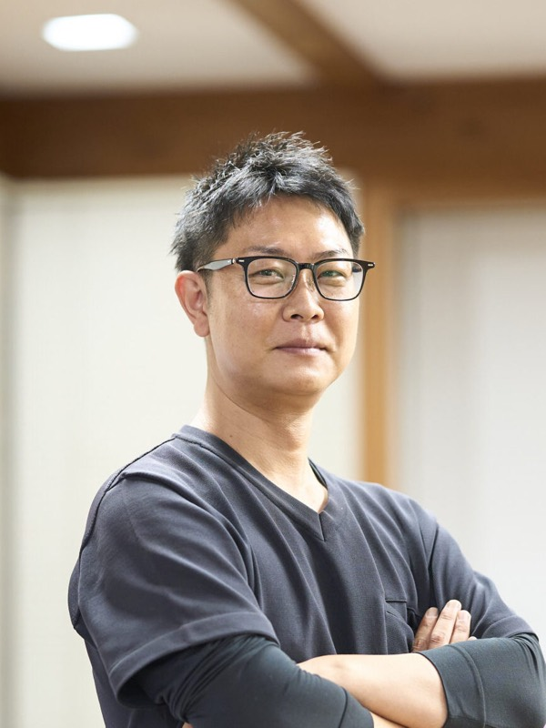
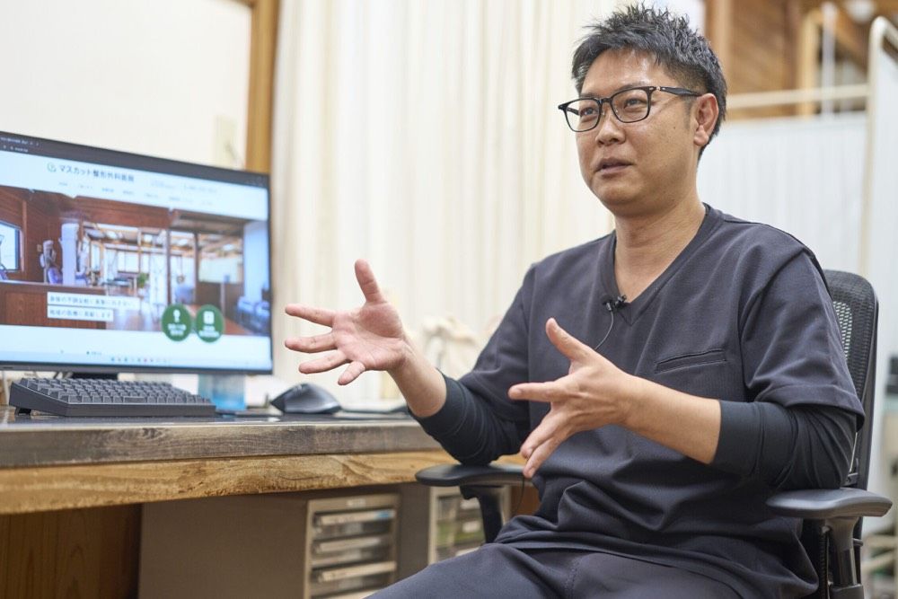
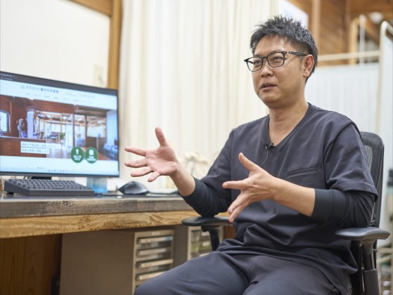
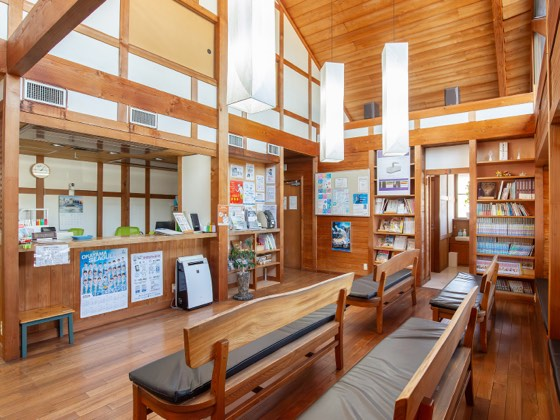
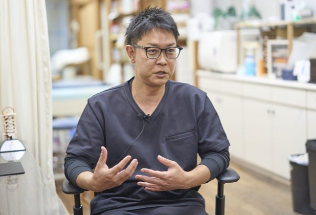
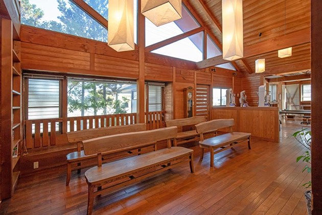
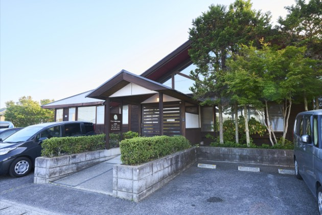
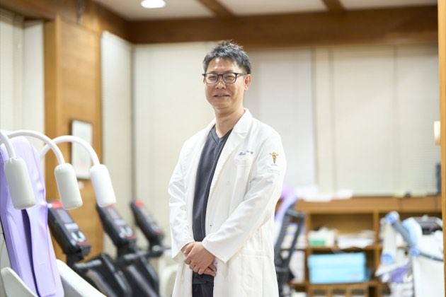
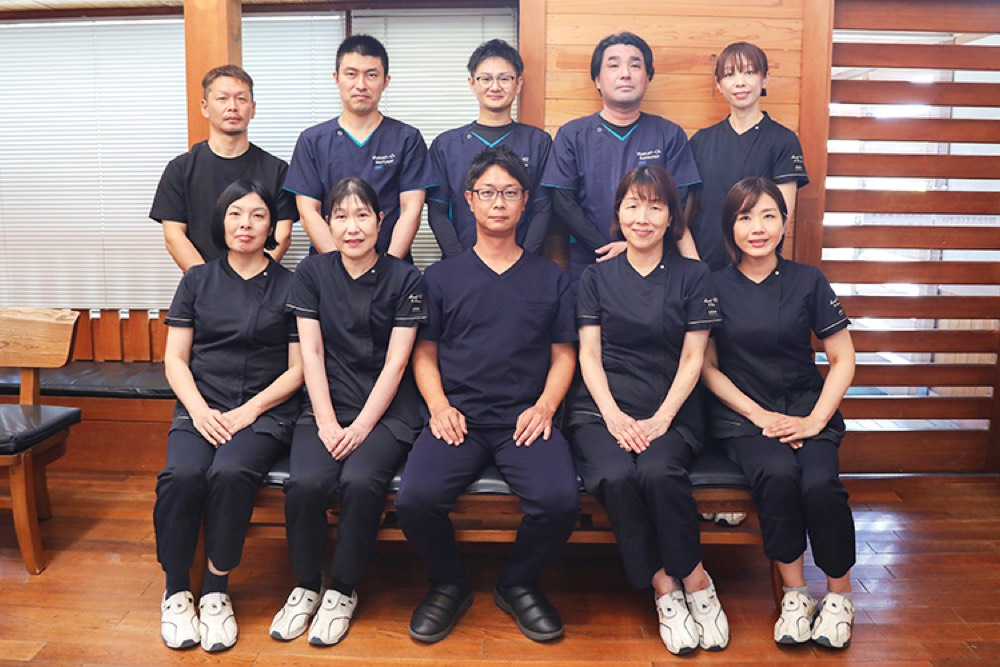

赤磐から岡山へ!地域を照らす医療の挑戦
渡辺 雅仁masahito watanabe
医療法人マスカット整形外科医院 理事長兼院長
1983年岡山県笠岡市生まれ 。6年間の浪人生活を経て医師となり、専門分野に悩む中で恩師の言葉に救われ整形外科医を志す 。2014年岡山大学医学部医学科を卒業後、同大学病院にて臨床研修を行う 。2016年に岡山大学整形外科学講座へ入局し、県内各地の病院で研鑽を積む 。2023年、医療法人マスカット整形外科医院の理事長兼院長に就任 。
企業サイトを見るCHAPTER 01
遠回りの末に出会った、医師としての天職

Qなぜ医師を志し、その中でも整形外科という専門分野を選ばれたのでしょうか?
A医師への憧れは、幼少期に見た医療ドラマの影響もあり幼稚園の頃から漠然と抱いていました。しかし、その想いが確固たる決意に変わったのは、医学部を目指して勉学に励んでいた受験生時代に親戚の叔母を亡くした経験がきっかけです 。病床の叔母は、自身が最もつらく苦しい状況であるにもかかわらず、見舞いに訪れた私に向かって『まあくんなら大丈夫だからね』と優しく力強い励ましの言葉をかけてくれました 。その時の温かい言葉が今でも胸に深く焼き付いており、医師を志す気持ちが一層強くなったのです 。
Q6年間の浪人生活という「遠回り」の経験は現在の医療活動にどのように活きていますか?
A当時は苦しい日々でしたが、あの時間こそが現在の私の医療の土台になっていると感じています。年齢を重ねてから医学部に入学した分、人一倍の覚悟がありました。卒後臨床研修では『スーパーローテート制度』でしたので、内科をはじめとする様々な診療科を幅広く回り貪欲に知識を吸収しました 。これらの経験があるからこそ現在のマスカット整形外科医院において単に骨や関節の痛みを診るだけでなく患者さんの全体的な健康状態に目を配ることができています 。
CHAPTER 02
0歳から100歳まで支える「寄りどころ」としての強み
Qマスカット整形外科医院の特徴や他院にはない強みについて教えてください。
A当院は岡山市のベッドタウンとしての機能を有する赤磐市に位置しており赤磐市内をはじめ、岡山市東区・北区など非常に広範囲な地域から多くの患者さんにアクセスしていただいています 。病院としての最大の特徴であり他院にない強みは、診察室とリハビリテーションスペースの間に扉などの仕切りが一切なく空間が完全に一つに繋がっているという構造にあります。壁がないため診察室にいても隣のリハビリ室から患者さんやスタッフの活気ある声が自然と聞こえ、医療従事者と患者さんの心理的距離が非常に近くなっています。私自身も診察の合間や空いた時間があると、すぐにリハビリ室へ赴き患者さんが実際にどのように体を動かしているか、治療の効果を直接この目で確認することができます。常に患者さんの状態をリアルタイムで把握し、理学療法士などのスタッフと密な連携を取れることが当院の強みです。また、生後間もない0歳の赤ちゃんから100歳を超えるご高齢の方まで、あらゆる世代の患者さんを受け入れていることも特徴の一つです。整形外科診療を通じて地域の皆さまの健康を支え、人生のさまざまなステージに寄り添う「地域の寄りどころ」としての役割を担いたいと考えています。まさに、0歳から100歳までを支える地域医療の王道を実践している医院だと自負しています。
Q医療を行う上で、最も大切にされている信念やこだわりは何でしょうか?
A患者さん一人ひとりに寄り添い、地域の皆様から『体や健康のことで困ったら、まずここに相談しよう』と思っていただける医療を提供することです 。私の座右の銘は『一隅を照らす』という言葉なのです。自分が置かれた場所で全力を尽くし、周囲を明るく照らす存在でありたいという強い想いを持ちながら、日々の診療にあたっています。






CHAPTER 03
検査体制の強化と岡山全体の医療質向上への挑戦

Q現在、医院として最も注力している取り組みや、今後の課題への対策について教えてください。
A2023年に医院を継承した際、まず取り組んだのは院内設備の刷新でした。リハビリテーション機器をはじめ、診療環境の整備を進めたことで、より質の高い医療を提供できる体制が整ったと感じています。
一方で、現時点でも解決すべき課題があります。それは、すべての検査を院内で完結できないことです。一部の精密検査については外部の医療機関へ依頼しているため、患者さんには移動の負担や検査日程の調整など、ご不便をおかけする場合があります。
こうした課題を根本的に解消するため、現在はCTやMRIといった大型の精密検査機器の導入を本格的に検討しています。院内で診察から検査、治療までを一貫して行える体制を整えることで、患者さんにより迅速で質の高い医療を提供したいと考えています。
当院には現在、私を含め13名のスタッフが在籍しています。小規模な組織ではありますが、放射線技師が常駐していることは大きな強みの一つです。理学療法士、看護師、受付スタッフを含め、それぞれが専門性を発揮しながら一つのチームとして連携しており、この強固なチームワークこそが当院の財産です。
今後、検査機器の導入によって診断精度と利便性をさらに高め、地域の皆さまにより安心していただけるワンストップ医療の実現を目指していきます。
Q今後の長期的な目標や、岡山という拠点に対する想いをお聞かせください。
A岡山県は災害が比較的少なく、温暖な気候で安心して暮らせる非常に恵まれた環境です 。そのため他県から移住されてくる方も多く、当院を来院される患者さんも年々増えています。また、岡山大学病院をはじめとする地域の基幹病院との連携体制も充実しており、当院での対応が難しい症例についても、速やかに専門医療機関へ紹介できる環境があります。
今後の目標としては、まず赤磐市とその近隣地域において、皆さまの健康を支える「医療の寄りどころ」としての役割をしっかりと果たすことです。
その上で将来的には、この地域医療のモデルをさらに発展させ、岡山市内での新たなクリニック展開も視野に入れています。組織として成長することで地域の雇用創出にも貢献し、より多くの方に質の高い医療を届けられる体制を築いていきたいと考えています。
そして最終的には、一つの医療機関としての枠を超え、岡山県全体の医療の質の向上に貢献することが私の大きな目標です。その実現に向けて、これからもスピード感を持ちながら、一歩一歩着実に挑戦を続けてまいります。